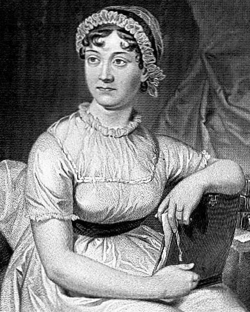

"I declare after all there is no enjoyment like reading! How much sooner one tires of any thing than of a book! - When I have a house of my own, I shall be miserable if I have no an excellent library." - Jane Austen
"All good books are alike in that they are truer than if they had really happened, and after you are finished reading one, you will feel that all that happened to you and afterwards it all belongs to you; the good and the bad, the ecstasy, the remorse and sorrow, the people and the places and how the weather was." ― Ernest Hemingway